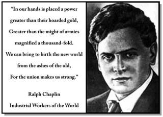

Why I Wrote Solidarity Forever
By Ralph Chaplin - American West, 1968; Introduction by Bruce Le Roy
In the pantheon of American labor history there is a very special place for Ralph Chaplin, the man and his work. As the poet laureate of the Industrial Workers of the World (IWW), he is probably remembered best for giving organized labor its fighting them song, Solidarity Forever. But to those of us who were privileged to work with him at the Washington State Historical Society during the last few years of his life, Ralph Chaplin will always be honored for more, much more.
His love affair with the Pacific Northwest was revealed time and again in his writings as well as in his conversation. This rugged region of mountains and Puget Sound, of epic pioneering and great conflicts provided a satisfying backdrop for the unfolding drama of labor history. The “Free Speech” fights at Spokane, Everett, Tacoma, and other cities on the Northwest Coast were milestones to Ralph Chaplin. He reported that crises that exploded into gunfire and tragedy at Everett and Centralia. In the 1960 essay that follows this introduction, Chaplin writes: “Even at this late hour I am more grimly convinced than ever that neither the song itself nor the organization that sparked it could have emerged from any environment other than the Pacific Northwest in the afterglow of the rugged period of American pioneering”.
Further on, he says: “It is true that Solidarity Forever was written in Chicago, but it is also true that nobody ever heard of it until fifty thousand striking Puget Sound loggers bellered it out to a world that didn't care a hoot about the problems of voteless and cruelly exploited 'timber beasts'.”
In his autobiography, Wobbly: The Rough and Tumble Story of an American Radical, Chaplin tells how he began the writing of “Solidarity Forever” during the Kanawha miners' strike in Huntington, West Virginia. The song was not finished until January 17, 1915 in Chicago, on the day of a giant “Hunger Demonstration”. The twenty-eight-year-old author already had an intimate knowledge of labor conflict, beginning with his father’s account of the Haymarket Square Riot in the strife-torn Chicago of 1886, and proceeding through Ralph's personal involvement with strikes in Chicago and West Virginia.
Wobbly is the sensitive and honest account of the evolution of an artistic youth into a rugged and effective labor editor, who survived riots, beatings, and imprisonment for his political beliefs. As the right-hand man of Big Bill Haywood, the crusading (General Secretary-Treasurer) of the IWW, Chaplin was generally where the action was. However, much was deleted from the first draft of Wobbly, as the original manuscript in the Washington State Historical Society shows. The author told me that the editors of the press that published Wobbly also cut many passages from the book.
By the time Ralph Chaplin joined the staff of the Washington State Historical Society, more than a decade had elapsed since the publication of his autobiography. After he had been there nearly two years, I asked him why he did write a kind of “addendum” to Wobbly, giving some of his ideas about the great changes that had taken place in the American labor movement since he joined it as a youth. He was hard to convince, arguing that the book told most of the story. But finally he succumbed to the idea that he owed it to posterity to make some final statement.
With one major exception, “Why I Wrote 'Solidarity Forever'” is the last important bit of writing that Ralph completed before his death in 1961. That exception is his epic poem, Only the Drums Remembered: A Memento for Leschi, which is the distillation of a lengthy sympathetic study of the dispossessed Indian. The protagonist of the poem is a chief of the Nisqually tribe of western Washington. History has pretty well proven that Leschi executed on a trumped-up charge of murder, served as a scapegoat for the Indian War of 1855. Chaplin felt a strange almost mystical identification with the great Indian leader. What his poem was to Chaplin the poet, “Why I Wrote 'Solidarity Forever'” was to Chaplin the labor historian.
He predicted that the article “would cause equal consternation to the godly and the ungodly” . (Characteristically, he immediately credited the remark to William Lyon Phelps, who made it upon the occasion of his appointment as Literary Editor for Esquire magazine). Vigorously independent in his judgments, Ralph would not have been overly concerned with whatever consternation the essay might inspire. The years of physical and literary combat with one Establishment or another had toughened him against reaction. He speaks here with a voice of another age – an age in which a man was often held to account for what he said in no uncertain terms. In spite of the sharp vigor of his opinions, however, it would be a mistake to assume that Chaplin is simply calling down a plague on both labor and management in the present age. To accept that interpretation would do injustice to a truly complex mind. Ralph saw in the evolution of the labor movement a deplorable distortion of its beginnings, yet he never abandoned hope in the same “grass roots unionism” that had marked his era. But let him speak for himself in this first publication of his only supplement to Wobbly, a book now accepted as a classic of American labor history.
--Bruce Le Roy.
When I wrote “Solidarity Forever”, I had no way of knowing that less than half a century later it would be keynoting the none-too-reassuring news that an unborn generation would learn about on tomorrow's newscasts. But that is the way things worked out. Recently I have been asked to tell the story. Frankly, I hardly know where to start.
The fact that an obscure labor editor happened to write a song like that is of no particular historical importance. What is important is that it was written at all, timed as it was, almost to a split second, to indicate a tide in the affairs of men that was destined to put a large part of the world's population either behind the Iron Curtain of totalitarian statism or in the uneasy rocking chairs of the Welfare State. In spite of intentions that were emphatically otherwise, that seems to be the sour note on which the story ended – the story of the song, that is – not the story of the turbulent era of pioneering labor history that went into its making. If the people who read these lines are of familiarly with the conditions from “Solidarity Forever” emerged, they will more than likely be unable to understand the significance of the banner headlines in the morning newspapers.
One thing is certain: nothing of the sort went into the making of “Solidarity Forever”. It was originally designed to meet the needs of a nonconformist, nonpolitical labor organization that was critical of the crudely divided craft unions of the times and practiced voluntary libertarian teamwork at the point of production to obtain its objectives through the “One Big Industrial Union”. The name of this crusading organization was the Industrial Workers of the World (IWW). Historians using the hysterical newspaper headlines of the day as source material have depicted its stormy career in colors blacker than the hinges of hell. Erudite professors, quoting on another as “authorities”, label it as a conspiracy of alien arsonists and dynamiters, the purpose of which was to place all law-abiding citizens at the mercy of the mob. Infuriated by the IWW's libertarian singleness of purpose, the Communists have fought it more bitterly than they have at any time fought the hated bourgeoisie. As for the author of “Solidarity Forever”, he is not at all unhappy to have been associated with the very first indigenous anti-statist, anti-totalitarian labor organization that Moscow saw fit to liquidate – and for good and sufficient reasons. If present-day historians do not get this seemingly confused picture into focus, their lucubrations will be something other than authentic history.
I wrote “Solidarity Forever” at a time when there was a life-or-death struggle between fiercely competitive ideological groups to see which of them would shape the future the then embryonic left-wing labor movement. It was a knockdown-drag-out fight with no holds barred, and every available weapon from gentle persuasion to brass knuckles was used to gain a fair or unfair advantage. Indicative of the final outcome is the fact that it was returning Russian-born IWW members who manned the Soviet Union's last barricade of freedom when Trotsky's janissaries liquidated the anti-Communist sailors of the Red fleet after their unsuccessful rebellion at Kronstadt. Many of those young men and women came from Chicago's West-Side close to the IWW headquarters, their rich voices singing what the Communists sneeringly referred to as the “Anarchists' Marching Song”. As for me, the thunderous rhythm was full of the revolutionary affirmation I tried to weave into the pattern of “Solidarity Forever”. Those voices still haunt me, coming as they did from the Russia of Turgenev, Tolstoi, Kropotkin, and Pasternak.
All of this harkens back to the beginning of the war of ideas that was starting to jell in the first decades of the last century, and that was to split the contenders into warring camps for a long time to come. It is my opinion that those ideas have made history, and a whale of a lot of it. Unless present-day historians can identify and define the conflicting elements involved in this confused situation, they will be unable to make the world upheaval that followed in their wake understandable. Every now and then some nitwit theoretician will brush the IWW aside with the owlish observation that we were “the Communists in those days!” Certainly the ideas of such divergent personalities as Lucy Parsons, Victor Berger, Daniel De Leon and William Dudley Haywood were important factors in the struggle, but it was the larger clash of irreconcilable social and economic philosophies that met head on and refused to merge that was back of the prevailing ferment.
What hung precariously in the balance at the time “Solidarity Forever” was written was first a choice between political action at the ballot box and direct action at the point of production for the attainment of immediate objectives, and secondly a choice between armed insurrection and the general strike as a means of putting “the parasite and outmoded capitalist system in its place”. It was as simple as that. Either way the goose of the private enterprises would have been cooked. As for the young author of “Solidarity Forever”, he had already seen too many mobs in action to relish the prospect of bloody revolution summed up in the hateful words of “La Carmignole”, which the Commies sang so boisterously in their halls and during the street demonstrations. There was no such thing as “co-existence” in those days; it was either whole-hog or nothing. Co-existence was destined to come later on, when the Commies had the world by the tail with a downhill pull and had developed the fine art of liquidation to a point where it was a cat-and-mouse routine to make the fun last longer. We were all that way. It was a question as to whether those who dished it out could take it.
Perhaps it is worth noting that Nikita Khrushchev was born the same year the IWW was organized. That was also the year the first Russian Revolution was put down in St. Petersburg, and both “Babushka” and Gershuni were touring the United States telling about it. I was eighteen years old at that time. Confronting me and other idea-hungry non-conformist youngsters at that moment was a choice among armed insurrection of the Nevsky Prospect variety, the political action of the “Yellow” Victor Berger kind of socialism, the craft unionism favored by Samuel Gompers, or the “red” socialism of Debs coupled with the concept of revolutionary industrial unionism favored by Haywood and the fighting Western Federation of Miners. There was also a weird admixture of politics and industrial unionism dreamed up by the dogmatic Daniel De Leon, but that seemed hardly worth mentioning. Because of the fact that my father was, as a freight yard tower-man, an active participant in the ARU railroad strike of 1894 in Chicago, I had witnessed no small part of violence from the front porch of the cottage adjoining the Pan Handle yards where we were then living. It was from that vantage point that I heard Debs appeal for the kind of united strike action that would make violence unnecessary. To me this made sense. Talking these matters over with Debs long afterwards, my father confided to me that the sight of bloodshed always made him sick. This I could understand also, maybe because I had been reading Shelley at the time I first read the Communist Manifesto.
It was from the lips of Eugene Victor Debs that I first heard the world “solidarity” uttered, and from Debs also that I first learned of the Western Federation of Miners, and of Bill Haywood, who, like Debs, brought down on his battle-scarred head the wrath of the employers and the invective of the capitalist press. Naturally, I could not remain neutral. It wasn't in the cards, however, for me to meet Haywood until eight years later and through him to contact that One Big Union of the Industrial Workers of the World that was to become a lifetime dedication. Debs remained in the Socialist Party, which he had organized in Woodstock Jail after having been persuaded that the time was ripe for a combined labor union and Labor Party crusade on behalf of the economic underdog. He started out frankly critical of both politics and politicians, sharply disagreeing with those who looked upon political action as a cure-all. Many of us thought that Debs looked upon the Socialist Party as a means of appealing to splinter nonconformist groups for united action against a common enemy. About that time Charles Edward Russell called the cut in the International Socialist Review by charging that “anyone who sits at that grimy board cannot remain uncontaminated.” This was the policy of the Review at the time I was selected to take Seymour Stedman's place on the board of directors. I was then twenty-one years old and needed no coaxing to declare war on Victor Berger and his craft union—political action fixation.
Haywood, in complete agreement with Debs at that time, was denouncing Berger and Gompers as “two labor fakirs tarred with the same stick”. Debs went so far as to beg his huge audiences to see to it that he never was elected to public office lest he too succumb to the temptation to misuse power. Debs in the “red” Socialist Party, and Haywood in the “red” Western Federation of Miners always held up – over and above the winning and the maintenance of living wages and humane working conditions – the vision of a free world in which man's inhumanity to man would become a thing of the past. That was why they were “revolutionary”. Debs, like Haywood, took the position that union officialdom is not the master of the rank-and-file membership, but its servent. That is why, in their own estimation at least, they were “democratic”. In my humble opinion they were both right in proclaiming that no one gains, and everybody loses, by getting masses of men to march shoulder to shoulder in the wrong direction. “Solidarity Forever” was written on the assumption that we knew where we were going and knew how to get there. Overseas we saw the Socialist and Labor parties becoming more and more hidebound with Marxist dogmatism. Tom Mann and Jim Larkin in Britain, and the various syndicalist movements of the Continent and Latin America, met with our whole-hearted approval. What we were seeking was a united labor movement – “all for one and one for all” – and it was this principle that I tried to embody in “Solidarity Forever”. That is why, if for no other reason, that the story of “Solidarity Fovever” may be worth the telling.
At all events, my “Marching Song of Industrial Freedom” has been making history for a long time (so I am informed), and it is still going strong,. It was launched into a world in which issues were shaping up that would shake the established order to its foundations. One part of the American heritage is the heritage of conflict, this for the good and sufficient reason that our years of conflict have shaped our national destiny more significantly than our uneasy intervals of peace. No one had to spell out the meaning of the “class struggle” for us; it was one of the inescapable realities of our daily lives. I didn't write “Solidarity Forever” for ambitious politicians or for job-hungry labor fakirs seeking a ride on the gravy train. I wrote it, or thought I was writing it, for a bunch of “timber beasts”, “gandy dancers” and “harvest stiffs” who wouldn't have had a full belly or a place to flop if they hadn't learned to become “the stick-together guys that organize”. These were my people, and they looked to me to write this kind of song for them. I prefer to think that it was they, rather than any special skill on my part, that breathed the breath of life into whatever it was that made the words and rhythm click. That it became the them song of the “fighting, singing IWW” is understandable; that it became, at a later date, the them song of the not-so-needy, not-so-worthy, so-called industrial unions spawned by an era of compulsory unionism is not so understandable. Something also beyond the wildest stretch of my imagination was the possibility of Big Unionism competing with Big Business on fairly equal terms – and using identifcal promotional devices, including singing commercials – to keep business booming. That sort of “solidarity”, in my humble opinion is nothing to brag about, or sing about.
The Industrial Workers of the World, at the time “Solidarity Forever was written, was distinctly indigineous. Even at this late hour I am more grimly convinced than ever that neither the song itself nor the organization that sparked it could have emerged from any environment other than the Pacific Northwest in the afterglow of the rugged period of American pioneering. If we had waited for the industrialized East to inspire what went into its making, we might still be waiting. Neither was it a foreign importation. Few old timers agreed with Brissenden's thesis that the IWW was a rehash of European syndicalism. To us it was more akin to what Thomas Jefferson had in mind when he declared that “The government that governs the best, governs the least.” The raw frontier did that to men.
It is true that “Solidarity Forever” was written in Chicago, but it is also true that nobody ever heard of it until fifty thousand striking Puget Sound loggers bellered it out to a world that didn't care a hoot about the problems of vote-less and cruelly exploited “timber beasts”. It is also true that the young author of “Solidarity Forever” had been shaped by bitterly contested labor struggles, including a two-year strike against mine owners of Kanawha County, West Virginia, but that it took the sustained militancy of the grass-roots Western Federation of Miners, in the face of equally ferocious opposition to put the hefty punch into “Solidarity Forever” that later on made it the theme song of the entirely latter-day labor movement.
This is not the attempt of a nostalgic old-timer to impress a less ideologically alert generation with the notion that “there were giants in those days”, and that the author of “Solidarity Forever” was one of them. The fact is that there were no supermen among us – and none would have been tolerated. We were faced with the choice of being either true-blue rebels or “scissorbills”. The “scissorbill” was that belly-aching element among the unorganized that would rather remain unorganized than do anything about it. When the IWW harvest workers announced, “We are out for a winter stake in this summer, and we want no scabs around”, they confirmed the declaration by singing “Solidarity Forever” instead of “Hallelujah I'm a Bum”. And it worked, at least to the extent that the niggardly “going wage” was quickly discarded in favor of the regional five-dollar day. When a hostile “town clown” would confront the union harvest stiffs at the freight yards, demanding, “Who are the leaders here?” the unanimous response was “We are all leaders – what are you going to do about it?” When asked by a police court judge to define the word “scissorbill”, Joe Hill is reported to have replied “The 'scissorbill', your Honor, is an 'I guy'; we happen to be 'we guys'.” It was as simple as that to Joe Hill and his fellow workers. That is why, in my opinion, Joe Hill's satirical “Mr. Block” was far more definitive than “Solidarity Forever”.
All that belongs to yesterday, but it is needed to make labors yesterdays understandable, particularly in relation to the crazy-quilt pattern of industrial relationships that grew out of them. Among those of us who managed to survive those stormy pioneering years, there is no one who does not look with a rather jaundiced eye upon the “success” of “Solidarity Forever”. All of us deeply resent seeing a song that was uniquely our own used as a singing commercial for the soft-boiled type of post-Wagner Act industrial unionism that use million-dollar slush funds to persuade the congressional office boys to do chores for them – chores that the case-hardened crusaders of the old days were eager to do themselves for the good of the cause, with their bellies flapping against their backbones. Many people these days wonder how Joe Hill could stop traffic on busy skid row street corners singing such hilarious songs as “Pie In The Sky” and “Mr. Block”, or how he could refuse to be blindfolded when he faced the firing squad at the Utah State Prison, and himself give the order for the fatal volley that made his name the symbol of dedicated service to the economic underdog. Or why the striking loggers on the S.S. Verona chose to die singing “Hold the Fort” and “Solidarity Forever” in the rain of bullets from a mob of respectable businessmen on the docks at Everett, Washington. Or why young Wesley Everest, union organizer and World War I veteran, was lynched at midnight from “Hangman's Bridge” in Centralia, Washington. Or why my good friend and fellow worker Frank Little was given the same treatment by hired anaconda gun-thugs for attempting to organize the mercilessly exploited hardrock miners at Butte, Montana. This could go on and on, every word of it is true, but only to be discounted as the resentment of an old codger mumbling through his beard.
It is still my contention, however, that the story of organized labor, both in principle and practice, is too important to be misrepresented or swept under the rug of labor-hating pressure groups or individuals. I contend also that when the labor movement ceases to be a Cause and becomes a business, the end product can hardly be called progress. It must be remembered that my “Battle Hymn of Industrial Democracy” was tailored to meet the unique requirements of free-born, pioneering Americans who resented the status of unresisting wage-slavery; and that it was critical of the archaic craft unionism of those days because of disillusionment with repeated and uniformly hostile efforts to find a political answer to pressing economic problems. More than ever before in a long lifetime I am convinced that there are not such answers. To me the record clearly reveals that “anyone who sits at that grimy board cannot remain uncontaminated.”
An outstanding example of what set the IWW apart from the stuffed shirt organizational pattern of its day was the 1916 drive to put union cards in the pockets of the unorganized, voteless army of boxcar bindle stiffs who were expected to fill the breadbaskets of the nation that eventful year. The IWW Agricultural Workers Union, Local 400, armed with the Little Red Songbook plus a lot of selfless crusading fervor, did its job so well that it sent hysterical scare headlines screaming from coast to coast. How it appeared through the eyes of a competent, history-minded contemporary is preserved for the record by James Jones, the noted author of From Here to Eternity. An imprisoned World War II soldier, describing the spectacular fight that preceded the Local 400's successful operation, nostalgically recalls the dedicated IWW militancy of his boyhood days:
You don't remember the Wobblies. You were too young. Or else you weren't born yet. What they really were was a religion. They were welded together with a vision we don't possess. It was their vision that made them great. And it was their belief that made them powerful. And sing! You never heard anyone sing the ways those guys sang unless it was for a religion. Bunches of them, ten or twenty at a time, out in the harvest fields or in one of their free speech fights, sitting in the barred windows of the second floor of the jail singing the songs that Joe Hill had written for them or Ralph Chaplin's “Solidarity Forever”, a singing that swelled through the town until nobody could escape it.
The story of “Solidarity Forever” would have finished on a glory note had it finished right there. At the time I had no way of knowing that it would go into orbit, both with the type of unionism with which it had so little in common, and with the Red Star of monolithic statism that was already rising ominously in the East. Long after the IWW had seemingly joined the best laid plans of mice and men, “Solidarity Forever” continued to make headlines in one major strike after another, as such practical labor leaders as Walter Reuther and Harry Bridges plumming themselves with stolen feathers, hit pay dirt where the “pesky-go-abouts” of the IWW had been prospecting. Finally, the AFL-CIO elaborately printed Songs of Work and Freedom appeared, with “Solidarity Forever” emerging from the uneasy grave in which the IWW refused to lie buried as “the most popular union song on the North American Continent … If a union member knows only one song it is almost sure to be this. It has become, in effect, the anthem of the labor movement”.
This, of course, was a high honor and one not unappreciated, but what disturbed me was a clipping from the New York Times, bearing the same date line, that a promising presidential candidate was singing it from a soapbox to a bunch of striking workers in Wisconsin in an effort to cinch his nomination in the primaries. Even less reassuring were tidings that “Solidarity Forever” had been translated into a number of African dialects and used effectively by less tribes beyond the law, together with the made-in-Moscow slogan: “White Men Go Home!”
Rather belatedly, I was learning that solidarity for solidarity's sake is not enough. Seemingly, with the best of intentions, I had unleashed an element that made the high-voltage emotional power generated more potent than the instrument itself. Whatever it was, Walt Whitman must have had the same thing in mind when he spoke of “songs that sometimes come back to their authors dripping blood”. This I might profitably have kept in mind when it was scribbled hastily on a crumpled scrap of paper while members of the Western Federation of Miners were being shot down like jack rabbits from the Colorado state boundary to the Canadian border. At that time also I recalled the “Good Gray Poet” and the unforgettable Walt Whitman's caution: “To the States, or any one of them, or to any city of the States, resist much, obey little. Once unquestioning obedience, once fully enslaved, no nation, state, city of this earth ever afterward resumes its liberty … When there are no more memories of heroes and martyrs, and when all life and all souls of men and women are discharged form that part of the earth, then only shall liberty or the idea of liberty be discharged from that part of the earth, and the infidel come into full possession.
In my poor opinion it was grassroots, frontier Americanism of this kind that sparked both the IWW and the songs of solidarity that set it apart from the more “practical” and less dedicated craft unions that delivered the goods but had little to sing about. Those of us who gave the best years of our lives in the service of the singing, fighting IWW were enriched in the giving. At all times – on the soapbox, on the picket-line, and even in prison – we were aware of being part of something more important than our unimportant selves, a Cause worth living for and, if need be, dying for. We didn't enjoy ourselves; we enjoyed one another. We didn't envy the high and might of our generation; we pitied them, as the early Christians must have pitied the pagans. At heart we were probably the world's worst snobs, so sure we were that nothing on earth could be deader than a dead tycoon, and that nothing could be more deathless than a cause beyond the reach of death.
Even on the sunset trail I fail to see where and advantage has been gained for anyone living today by substituting the tyranny of capitalist exploiters with the even more merciless tyranny of a new elite of nonfunctional commissars, bureaucrats, and egg-noggin' do-gooders. We of the IWW made mistakes and paid for them dearly, but were we so wrong, after all, in contending with Thomas Jefferson that “the government that governs the best, governs the least”? Or with Patrick Henry, who, spurning the principle of involuntary servitude, shouted out to a similarly divided world: “Give me liberty or give me death”? It seems to me, at this late hour, that the stage is all set for the final conflict, not between the bourgeoisie and proletariat, as Marx predicted, but between the parasitic elite of totalitarianism and freeborn men who prize liberty more than they do their own lives. Either Man's last, best hope of freedom is at stake or it isn't. It just happens that the author of “Solidarity Forever” was convinced when he wrote it, and is still convinced, that there can be no co-existence with involuntary servitude. We learned this lesson in the school of hard knocks. We learned it early in the game by being around when things were happening. And because we learned it the hard way, those of us still alive are more than ever convinced that nothing less than the solidarity of freedom, God-guided men can make the “final conflict” anything other than Armageddon. If this be chauvinism, then let the cockeyed world make the most of it!